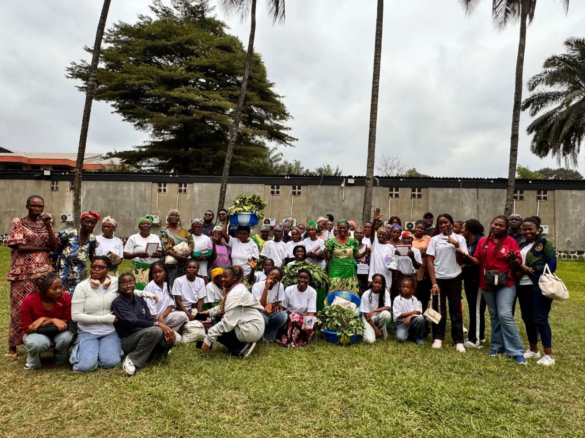

Association Mbongwana des Mamans Maraîchères
Mamans maraîchères : de l’aide à l’autonomie
La Fondation FLEJOM est allée à la rencontre des mamans maraîchères qu’elle accompagne, pour les écouter et réfléchir avec elles à une activité plus rentable.
Lire le récit« L’aide que nous apportons doit être considérée comme un tremplin, et non comme une dépendance. »